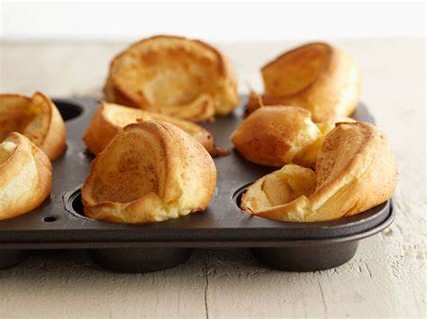

How to make the most delicious Popovers

Description
Popovers are delightful, airy pastries that are crispy on the outside and hollow on the inside. They make a perfect addition to any brunch or tea time spread. With their simple yet elegant nature, popovers are sure to impress your family and guests. Follow this easy recipe to create these delicious treats in no time.
Ingredients
- 2 cup all-purpose flour
- 2 teaspoon salt
- 2 cup whole milk, at room temperature
- 4 large eggs, at room temperature
- 2 tablespoons unsalted butter, melted and slightly cooled
- cooking spray or additional melted butter to grease the pan
Instructions
- Preheat the oven to 450°F (230°C). Place the popover pan in the oven as it preheats. The popover pan must be hot before you pour the batter into it.
- In a large mixing bowl, whisk together the flour and salt until well combined.
- In a separate bowl, beat the eggs until frothy. Then add the milk and melted butter, and whisk until thoroughly combined.
- Gradually add the wet ingredients to the dry ingredients, whisking continuously. Mix until the batter is smooth and no lumps remain. It's okay if the batter is slightly thin.
- Remove the hot popover pan from the oven, and carefully spray it with non-stick cooking spray or brush it with melted butter to grease each cup.
- Quickly pour the batter into each cup, filling them about 3/4 full.
- Place the filled popover pan back in the oven and bake at 450°F (230°C) for 20 minutes.
- After 20 minutes, reduce the oven temperature to 350°F (175°C) without opening the oven door. Continue baking for an additional 10-15 minutes, or until the popovers have risen tall and have turned golden brown.
- Once done, remove the pan from the oven, and immediately transfer the popovers to a wire rack to cool slightly. This will help maintain their crispness.
- Serve the popovers warm. They're best enjoyed fresh out of the oven. You can serve them with butter, jam, or honey for a sweet twist. They also pair wonderfully with savory accompaniments like roasted meats or sautéed vegetables.
Enjoy your homemade popovers and consider pairing them with our honey butter for the perfect pairing of salty and sweet!